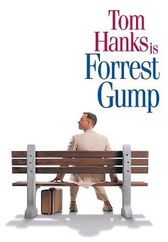

Forrest Gump is a 1994 American comedy-drama film based on the 1986 novel of the same name by Winston Groom. The film was directed by Robert Zemeckis and stars Tom Hanks, Robin Wright, Gary Sinise, Mykelti Williamson, and Sally Field. The story depicts several decades in the life of Forrest Gump, a slow-witted but kind-hearted, good-natured and athletically prodigious man from Alabama, who witnesses, and in some cases influences, some of the defining events of the latter half of the 20th century in the United States; more specifically, the period between Forrest's birth in 1944 and 1982. The film differs substantially from Winston Groom's novel, including Gump's personality and several events that were depicted.
http://www.imdb.com/title/tt0109830/

Hacksaw Ridge is a 2016 biographical war drama film directed by Mel Gibson and written by Andrew Knight and Robert Schenkkan, based on the 2004 documentary The Conscientious Objector. The film focuses on the World War II experiences of Desmond Doss, an American pacifist combat medic who was a Seventh-day Adventist Christian, refusing to carry or use a firearm or weapons of any kind. Doss became the first conscientious objector to be awarded the Medal of Honor, for service above and beyond the call of duty during the Battle of Okinawa. Andrew Garfield stars as Doss, with Sam Worthington, Luke Bracey, Teresa Palmer, Hugo Weaving, Rachel Griffiths, and Vince Vaughn in supporting roles.
http://www.imdb.com/title/tt2119532/
It's unique, and while skateboarding has grown a ton in popularity over the last few years, there are still piles of people out there who haven't tried it. Skateboarding will challenge you in new ways and teach you a new skill set. Trying new things and gaining new experiences is what keeps your brain alive and active, which in turn gives you new insights into the world and makes you a better, more interesting person!
http://www.imdb.com/title/tt2082197/
Your Name (Japanese: 君の名は。 Hepburn: Kimi no Na wa.) is a 2016 Japanese animated drama film written and directed by Makoto Shinkai and produced by CoMix Wave Films. The film was produced by Noritaka Kawaguchi and Genki Kawamura, with music composed by Radwimps. Based on Shinkai's novel of the same name published a month before the film's premiere, Your Name tells the story of a high school girl in rural Japan and a high school boy in Tokyo who swap bodies. The film stars the voices of Ryunosuke Kamiki, Mone Kamishiraishi, Masami Nagasawa, and Etsuko Ichihara.
http://www.imdb.com/title/tt5311514/